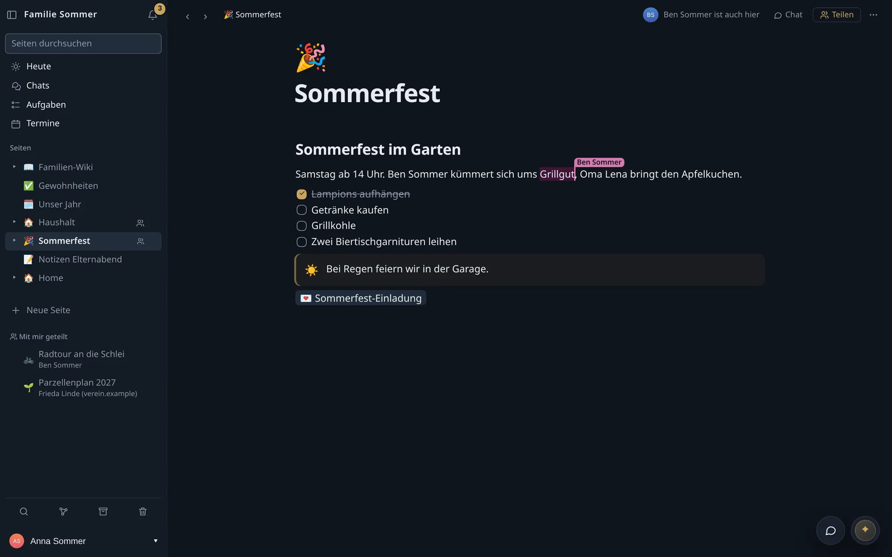
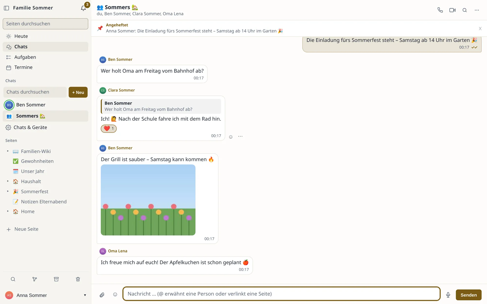
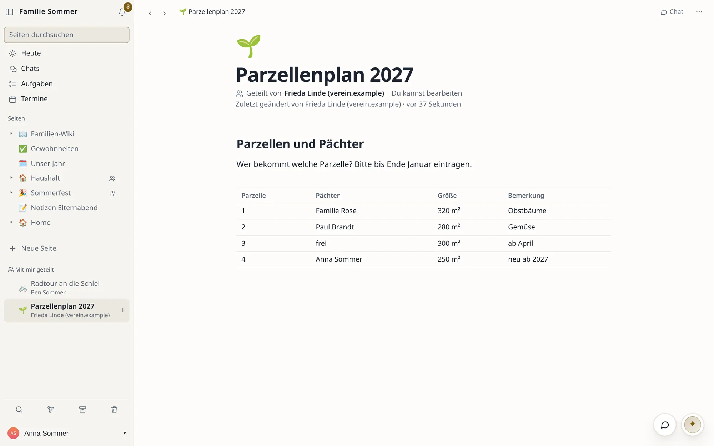

Write your own saga.
Your own server for pages, chat and calls
Saga puts pages, databases, chat, calls, calendars and tasks on your own server – for your family, club or team, with apps for your phone and your desktop.
- One domain, port 443 only
- Docker Compose
- End-to-end encrypted chats and calls
Beta: ready for everyday use, but still young – keep regular backups; some features are explicitly experimental. Saga stays in beta until version 3.0 – after that, it’s all about stability.

- Pages
- Databases
- End-to-end chats
- Group calls
- Federation
- Live editor
- Widgets
- AI assistant
- Calendars
- Encrypted backups
- Web · iPhone · iPad · Android · Mac · Linux
- AGPL-3.0
New in Saga 2.5
The biggest chapter yet.
Calls now run through a built-in node, the editor works live with others, and chats can do a lot more – plus sub-pages, seals, cover images and widgets for your pages.
Write together, live
The new default editor (Tiptap) shows other people’s typing and cursors instantly once the admin turns on live editing – even with people on connected servers.
- Mentions of people, dates and reminders with @
- Synced blocks: one piece of content in several places
- Tables, code, math, Mermaid, columns and media right in the text

Sub-pages in the page
Sub-pages appear inside their parent page – as a list or as a gallery with cover images.
Seals as page icons
36 Saga seals in three colours next to the emoji – for pages, databases and rows.
Cover gallery
100 pictures of the Saga elf in eight groups, plus a random cover for new pages.
Widgets and charts
Redesigned widgets – countdown, progress, metric, habits, weather – and charts from databases.
Easy to move in
Import from Notion, Trilium, Markdown/Obsidian and CSV, export as CSV and Markdown.
Mac app as a shell
The desktop app for the Mac shows your server’s web interface – with notifications, widgets and a tunnel for calls.
Chats & calls
Talk without anyone listening in.
Chats and calls are end-to-end encrypted: your server stores the messages but cannot read them – and neither can the admin.
Calls via GjallarhornExperimental
Saga brings its own media node. It runs behind any reverse proxy with WebSocket support, through your normal Saga address – no second name and no extra port.
- One-to-one and groups with video, audio and screen sharing – at launch with up to 4 participants or devices
- Turn a one-to-one call into a group without dropping the conversation
- Bring people in, even from outside the chat; whoever doesn’t answer is listed under “Not in the call” with “Ring again”
- Switch or add devices: move the call from your phone to your laptop, or add the laptop just to share your screen
- End-to-end encrypted – through the node, too
Gjallarhorn is experimental in 2.5. Safari and browsers on iPhone/iPad still call directly or via TURN; the apps and the Mac app use the tunnel through the Saga address.


Chats that do more
Modern chats (level 3) are now the default: still end-to-end encrypted, with everything you need day to day.
- Reactions, replies and editing, formatting and @mentions
- Voice messages up to 15 minutes
- Pin messages and chats, mute for a set time, mark as unread
- Groups with admins, picture and description, contacts and reporting to the admins


Federation
Many servers. One saga.
Connect your server with the Saga servers of your family, club or friends. Share pages, chat and call across servers – content stays with its owner, and every request between the servers is signed.
- Share pages
- Edit together
- Chats
- Calls
- Address book
- Signed (Ed25519)
Features
Everything you want to keep. In one place.
No cloud and no subscription: everyone has their own private space – and shares what they want to share.
Today
The start page greets you with what’s coming up: due tasks, events, recently opened pages and tiles for your services – shown according to your groups.

Pages
Blocks, sub-pages, templates, versions, comments and Markdown export – with quick search and a page tree.
Databases
Table, board, list, gallery, calendar, timeline and chart – with formulas, rollups, relations and filters.
Calendars & tasks
CalDAV calendars (e.g. Nextcloud, Radicale) and tasks from databases – with priority and repetition.
AI assistant
Optional, with an OpenAI-compatible service of your choice: asks your pages, cites sources and helps you write.
Federation
Saga servers connect to each other: share and edit pages across servers, chat and call.
Share & publish
Share with people and groups (read, comment, edit) or publish pages anyone can read without an account.
Backups & Nextcloud
Daily encrypted backups to S3, a folder or Nextcloud – and Nextcloud files right inside pages.
LDAP & SSO
Local accounts, LDAP/Active Directory and OpenID Connect – access to services through groups.
Five languages
Interface and apps in German, English, Spanish, Russian and Thai – chosen per account.



Screenshots show the German interface of a demo server.
Apps
At home on every device.
Saga runs in any current browser – on your phone, too. There are also apps that you sign in to with a QR code.

iPhone & iPad
Native app with widgets. Not in the App Store yet – build it yourself.
Android
Native app as an APK from the GitHub releases, Android 8 or newer.
Mac
Desktop app as a shell around the web interface, signed and notarized (macOS 26 or newer).
Linux
GNOME app as an RPM (Fedora, RHEL 10) and as a Flatpak for any distribution.
Up and running in minutes
Your server. Your rules.
Saga runs with Docker Compose. From the outside you only need one domain and port 443 on your reverse proxy – calls take the same route.
# download and set up git clone https://github.com/yggdrasil-sh/saga.git && cd saga cp .env.example .env # in .env: BASE_URL, SECRET_KEY, POSTGRES_PASSWORD docker compose pull && docker compose up -d # first admin password docker compose logs saga | grep Admin-Konto # update later (Saga makes a backup first) docker compose pull && docker compose up -d

- StartPull the image and start – Saga listens on port 8080, the admin area on 8081 (local only).
- Put a proxy in frontOne domain with HTTPS on port 443 points to Saga. In Nginx Proxy Manager turn on “Websockets Support”; Caddy and Traefik do it on their own.
- Set upCreate accounts, groups and services in the admin area, optionally LDAP or SSO. Under “Calls”, “Check now” tests the route through the proxy.
- Connect the appsSign in with a QR code from “Apps & devices” – done.
- Stay up to dateUntil 3.0 there is one channel: every update pulls the latest state of
main– a beta. Only releases? SetSAGA_VERSION=2.5in .env, before the next update.
Security & privacy
Your data stays with you
Saga runs on your server. No tracking, no telemetry – Saga only talks to services you set up (and, if you like, to GitHub to check for updates).
End-to-end encrypted
Chats and calls are end-to-end encrypted – across connected servers and through the node, too.
Secure sign-in
Passkeys and authenticator apps, 2FA required for admins or everyone. Failed attempts are slowed down, accounts are never locked out.
Backups with a plan
Daily, encrypted with age, retention 7/4/6, test restores – plus a backup before every update and personal backups for each person.
Separate admin area
Its own port, reachable only locally out of the box – with its own sign-in and diagnostics.
You decide
Federation, chat, calls and address book can be turned off per connected server; read receipts and “online” per person.
Open source
AGPL-3.0, all on GitHub – server, apps and the tools that made these screenshots.
Outlook
The road to Saga 3.0
The big building blocks arrive by 3.0 – after that, it’s all about stability. This is the plan; details may still change.
Saga 2.6 · AI that pitches in
The AI makes suggestions, takes on tasks once you say OK and reports back – everything can be undone. Plus your own status, contacts, calls with 10+ people and the apps in the stores.
Saga 2.7 and 2.8
Guest links, assigning tasks, templates and a family tree, mail from Thunderbird – and the groundwork for phone calls, with a field test in 2.8.
Saga 3.0 · Phone
Call phone numbers from Saga, be reachable by number, voicemail kept only on your device. Plus offline reading in the apps and better search.
Ready for your own saga?
Free software under the AGPL-3.0. Download it, host it yourself and make it yours.